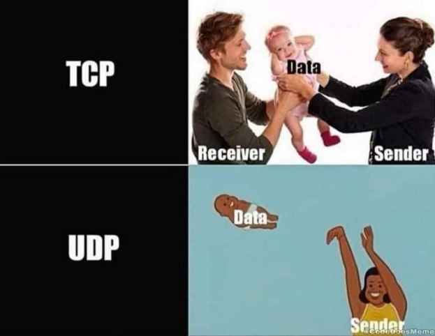
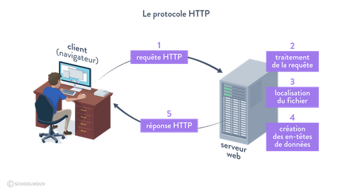
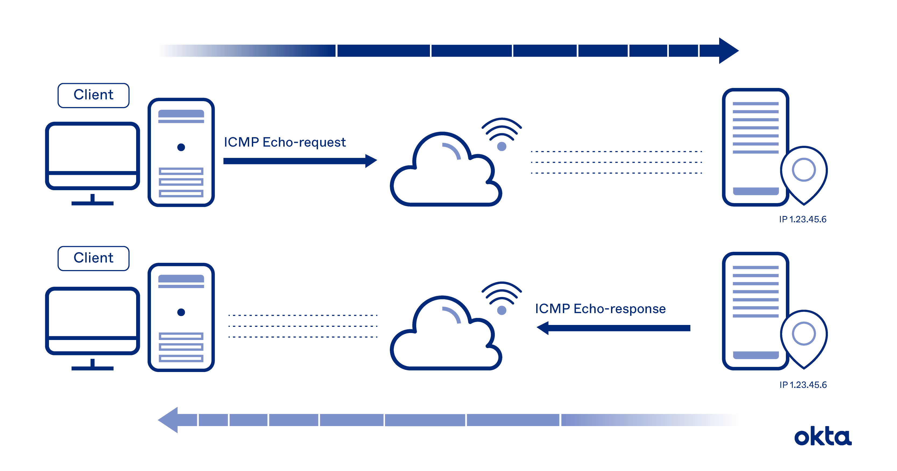
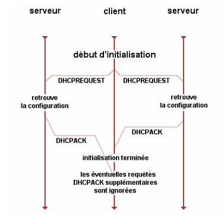

UDP vs TCP/IP
Le protocole UDP est un protocole qui permet d’envoyer des données entre deux machines. Il est orienté “sans connexion”, c'est-à-dire qu’il envoie les données sans demander la permission et n’a pas besoin de confirmation de réception.
Le protocole TCP/IP quant à lui envoie une première requête à la deuxième machine et attend une réponse avant d’envoyer les données. Une fois les données envoyées, il attend un accusé de réception de la part de la deuxième machine. Si l’accusé n’est pas reçu, la première machine pense que le paquet n’est pas arrivé.
Les paquets sont gérés par le protocole TCP, ce sont les données qui sont divisées en différentes parties et envoyées à la suite.
Le protocole IP sert à savoir où doivent être envoyées les informations grâce à un identifiant pour chaque machine sur le même réseau.

HTTP et HTTPS
L’Hypertext Transfer Protocol (HTTP, littéralement « protocole de transfert hypertexte ») est un protocole de communication client-serveur développé pour le World Wide Web. HTTPS (avec S pour secured, soit « sécurisé ») est la variante sécurisée par l'usage des protocoles Transport Layer Security (TLS).
HTTP est un protocole de la couche application. Il peut fonctionner sur n'importe quelle connexion fiable, dans les faits on utilise le protocole TCP comme couche de transport. Un serveur HTTP utilise alors par défaut le port 80 (443 pour HTTPS).
Les clients HTTP les plus connus sont les navigateurs Web permettant à un utilisateur d'accéder à un serveur contenant les données. Il existe aussi des
systèmes pour récupérer automatiquement le contenu d'un site tel que les aspirateurs de site Web ou les robots d'indexation.
HTTPS permet au visiteur de vérifier l'identité du site web auquel il accède, grâce à un certificat d'authentification émis par une autorité tierce, réputée fiable (et faisant généralement partie de la liste blanche des navigateurs internet).
Il garantit théoriquement la confidentialité et l'intégrité des données envoyées par l'utilisateur (notamment des informations entrées dans les formulaires) et reçues du serveur. Il peut permettre de valider l'identité du visiteur, si celui-ci utilise également un certificat d'authentification client.

ICMP
L'ICMP (Internet Control Message Protocol) est un protocole de signalement d'erreurs que les appareils de réseau comme les routeurs utilisent pour générer des messages d'erreur à l'adresse IP source lorsque des problèmes de réseau empêchent la livraison de paquets IP.

DHCP
DHCP fonctionne sur le modèle client-serveur : un serveur, qui détient la politique d'attribution des configurations IP, envoie une configuration donnée pour une durée donnée à un client donné (typiquement, une machine qui vient de démarrer).

Tous les protocoles
1. Protocoles de la couche Physique
4B5B ADSL BHDn Bluetooth Câble coaxial Codage bipolaire CSMA/CA CSMA/CD DSSS E-carrier EIA-232 EIA-422 EIA-449 EIA-485 FHSS HomeRF IEEE 1394 (FireWire) IrDA ISDN Manchester Manchester différentiel Miller MLT-3 NRZ NRZI NRZM Paire torsadée PDH SDH SDSL SONET T-carrier USB VDSL VDSL2 V.21-V.23 V.42-V.90 Wireless USB 10BASE-T 10BASE2 10BASE5 100BASE-TX 1000BASE-T
2. Protocoles de la couche Liaison
Anneau à jeton (token ring) Anneau à jeton adressé (Token Bus) ARINC 429 AFDX ATM Bitnet CAN Ethernet FDDI Frame Relay HDLC I²C IEEE 802.3ad (LACP) IEEE 802.1aq (SPB) LLC LocalTalk MIL-STD-1553 PPP STP Wi-Fi X.21
3. Protocoles de la couche Réseau
ARP Babel BOOTP CLNP ICMP IGMP IPv4 IPv6 IPX IS-IS NetBEUI NDP RIP EIGRP OSPF RARP X.25
4. Protocoles de la couche Transport
DCCP RSVP RTP SCTP SPX TCP UDP
5. Protocoles de la couche Session
AppleTalk DTLS NetBIOS RPC RSerPool SOCKS
6. Protocoles de la couche Présentation
AFP ASCII ASN.1 HTML MIME NCP TDI TLS TLV (en) Unicode UUCP Vidéotex XDR XML
7. Protocoles de la couche Application
BGP DHCP DNS FTP FTPS FXP Gemini Gopher H.323 HTTP HTTPS IMAP IPP IRC LDAP LMTP MODBUS NFS NNTP POP RDP RTSP SILC SIMPLE SIP SMB-CIFS SMTP SNMP SOAP SSH TCAP Telnet TFTP VoIP Web WebDAV XMPP